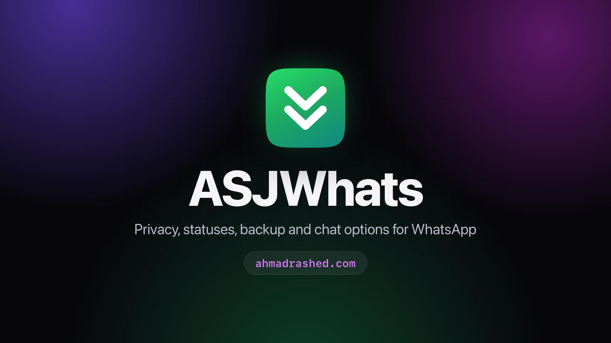
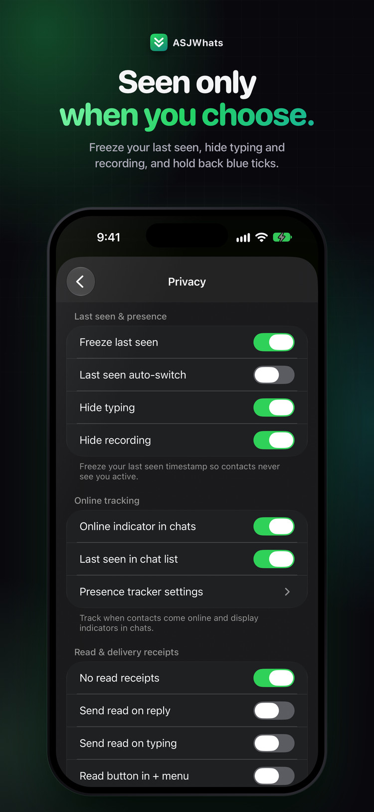
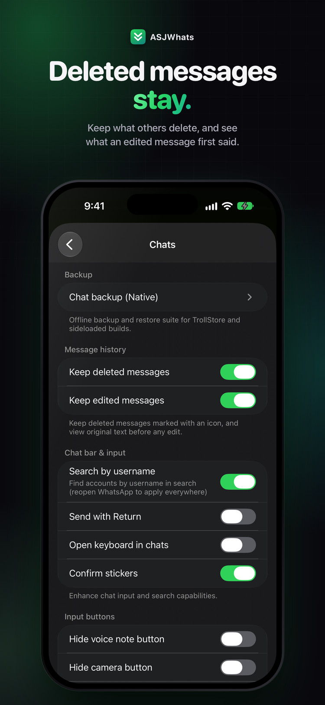
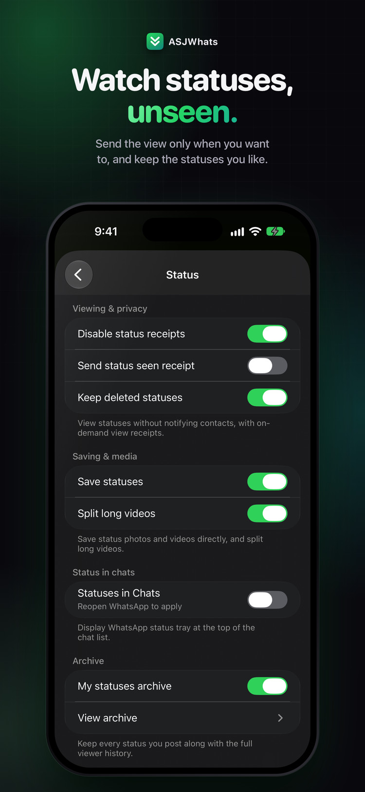
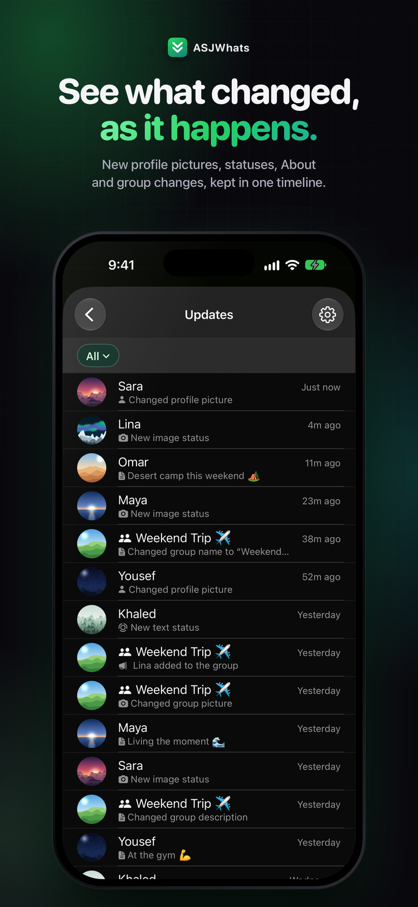
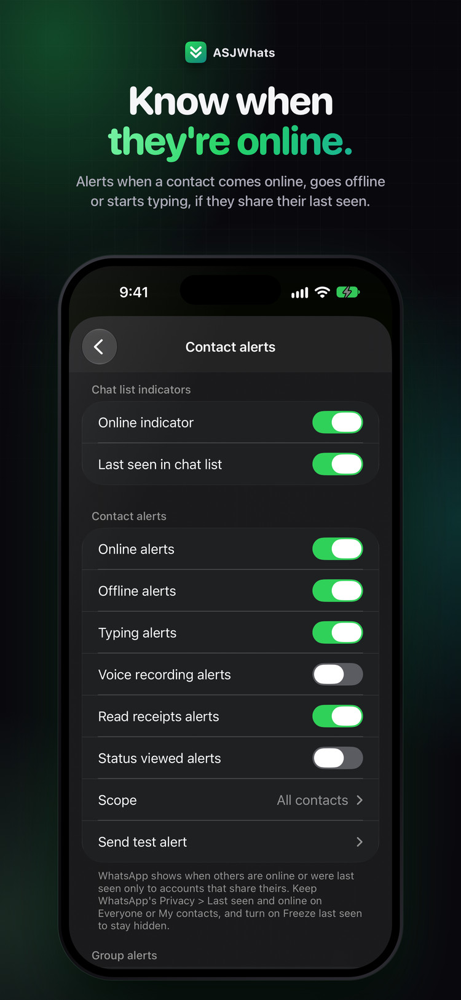
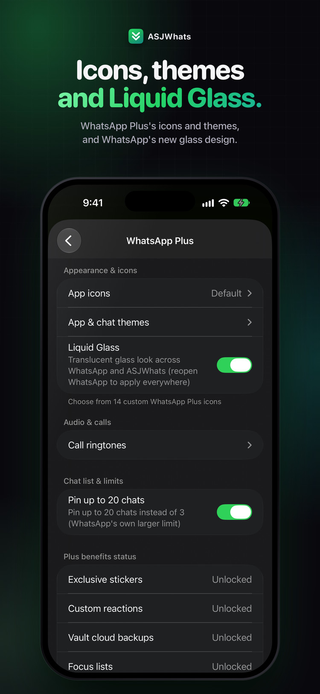
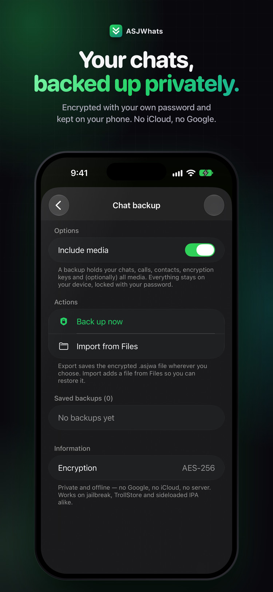
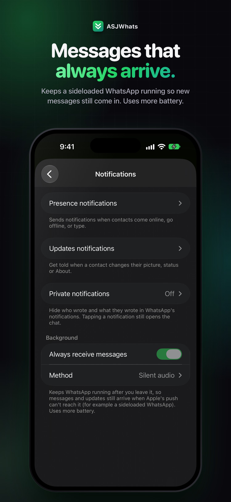

ASJWhats
Privacy, statuses, backup and chat options for WhatsApp — without changing how the app looks.
Open it from its own ASJWhats row in WhatsApp's Settings, right under your profile.








Updates and new tweaks: ASJ Tweaks on Telegram
Privacy
- Freeze last seen — contacts never see you active
- No blue ticks — send them when you reply, when you type, or with a Read button
- Hide typing and recording, and turn off delivery receipts
- View once, kept — replay it, and screenshot or record it without alerting
- Privacy per contact, quick privacy controls, and a switch that cuts WhatsApp off the network
Messages and calls
- Keep deleted messages — marked with an icon
- See what an edited message first said
- Forward to 20 chats, without the Forwarded label
- Pin up to 20 chats, and keep archived chats in the archive
- Message any number without saving it
- Block incoming calls from everyone or from the contacts you choose, and record calls on your phone only
- Confirm before calling, hide the call buttons, send with Return, tap to record voice notes
Statuses and updates
- Watch statuses unseen — send the view only when you want to
- Save any status, and keep the ones that get deleted
- Updates timeline — new profile pictures, statuses, About and group changes, as they happen
- Every status you post kept, with its viewers
- Statuses at the top of Chats, and long videos split into parts for your status
Contact alerts
- Know when they're online — an alert when a contact comes online, goes offline or starts typing
- Contact tracking — when they came online, when they left and how long they stayed
- Online dots in chats, and last seen in the chat list
- Every alert in one log
- For contacts who share their last seen
Media
- Always send HD photos and videos
- Pick unlimited photos, and select all in a chat's media
- Save profile pictures, and export voice messages
- Longer GIFs, and a forward button in the media viewer
- More in the + menu — a screenshot of the whole chat, images and GIFs from the web, photos sent as documents
Look
- WhatsApp Plus — 14 app icons, accent colours for the app and chats, and call ringtones
- Liquid Glass — WhatsApp's new glass design
- Small titles, no status bar, portrait only
- Hide tab badges, the Meta AI button and more
- Seconds on every time, and normal-size emoji
Security and backup
- App lock with Face ID, Touch ID or passcode — for WhatsApp, archived chats and starred messages
- Lock any chat, and cover WhatsApp in the app switcher
- Encrypted chat backup — with your own password, kept on your phone. No iCloud, no Google
Extras
- Private notifications — hide who wrote and what they wrote
- Messages that always arrive on a sideloaded WhatsApp
- Fake location — share any place you pick on the map
- Show a name and photo you choose for specific numbers, on your phone only
- Search every option, in English or Arabic
- English and Arabic — follows WhatsApp's own language
Contact
Changelog
1.0
- First release. Privacy, statuses, backup and chat options for WhatsApp, in English and Arabic.
- Ready for WhatsApp updates. An option a new WhatsApp no longer has is left out instead of crashing it, and three crashes in a row start WhatsApp in safe mode.